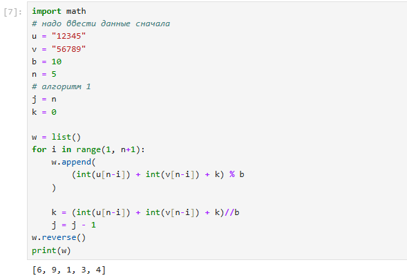

Цели и задачи
Цель лабораторной работы
Целью данной является Ознакомление с алгоритмами целочисленной
арифметики многократной точности, а также их последующая программная
реализация.
Выполнение лабораторной
работы
Длинная арифметика
Длинная арифметика — выполняемые с помощью вычислительной машины
арифметические операции (сложение, вычитание, умножение, деление,
возведение в степень, элементарные функции) над числами, разрядность
которых превышает длину машинного слова данной вычислительной машины.
Эти операции реализуются не аппаратно, а программно, с использованием
базовых аппаратных средств работы с числами меньших порядков. Частный
случай — арифметика произвольной точности — относится к арифметике, в
которой длина чисел ограничена только объёмом доступной памяти.
Сложение неотрицательных
целых чисел
- Вход. Два неотрицательных числа u = u1u2…un
и v = v1v2…vn;
разрядность чисел n; основание
системы счисления b.
- Выход. Сумма w = w0w1…wn,
где w0 - цифра
переноса, всегда равная 0 либо 1.
- Присвоить j = n, k = 0
(j идет по разрядам, k следит за переносом).
- Присвоить wj = (uj + vj + k) (mod b),
где $k = \left[ \frac{u_j + v_j + k}{b}
\right]$.
- Присвоить j = j − 1. Если j > 0, то возвращаемся на шаг 2;
если j = 0, то присвоить w0 = k и
результат: w.
Вычитание неотрицательных
целых чисел
- Вход. Два неотрицательных числа u = u1u2…un
и v = v1v2…vn,
u > v; разрядность
чисел n; основание системы
счисления b.
- Выход. Разность w = w0w1…wn = u − v.
- Присвоить j = n, k = 0
(k – заём из старшего
разряда).
- Присвоить wj = (uj − vj + k) (mod b);
$k = \left[ \frac{u_j - v_j + k}{b}
\right]$.
- Присвоить j = j − 1. Если j > 0, то возвращаемся на шаг 2;
если j = 0, то результат:
w.
Умножение
неотрицательных целых чисел столбиком
- Вход. Числа u = u1u2…un,
v = v1v2…vm;
основание системы счисления b.
- Выход. Произведение w = uv = w1w2…wm + n.
- Выполнить присвоения: wm + 1 = 0, wm + 2 = 0, …, wm + n = 0, j = m
(j перемещается по номерам
разрядов числа v от младших к
старшим).
- Если vj = 0, то
присвоить wj = 0 и перейти
на шаг 6.
Умножение
неотрицательных целых чисел столбиком
- Присвоить i = n, k = 0
(значение i идет по
номерам разрядов числа u,
k отвечает за
перенос).
- Присвоить $t = u_i \cdot v_j + w_{i+j} +
k, w_{i+j} = t \pmod{b}, k = \left[ \frac{t}{b} \right]$.
- Присвоить i = i − 1. Если i > 0, то возвращаемся на шаг 4,
иначе присвоить wj = k.
- Присвоить j = j − 1. Если j > 0, то вернуться на шаг 2.
Если j = 0, то результат:
w.
Быстрый столбик
- Вход. Числа u = u1u2…un,
v = v1v2…vm;
основание системы счисления b.
- Выход. Произведение w = uv = w1w2…wm + n.
- Присвоить t = 0.
- Для s от 0 до m + n − 1 с шагом 1
выполнить шаги 3 и 4.
- Для i от 0 до s с шагом 1 выполнить присвоение
t = t + un − i ⋅ vm − s + i.
- Присвоить $w_{m + n - s} = t \pmod{b}, t =
\left[ \frac{t}{b} \right]$. Результат: w.
Деление многоразрядных целых
чисел
- Вход. Числа u = un…u1u0,
v = vt…v1v0, n ≥ t ≥ 1, vt ≠ 0.
- Выход. Частное q = qn − t…q0,
остаток r = rt…r0.
- Для j от 0 до n − t присвоить qj = 0.
- Пока u ≥ vbn − t,
выполнять: qn − t = qn − t + 1, u = u − vbn − t.
- Для i = n, n − 1, …, t + 1
выполнять пункты 3.1 – 3.4: 3.1. если ui ≥ vt,
то присвоить qi − t − 1 = b − 1,
иначе присвоить $q_{i - t - 1} = \frac{u_i b +
u_{i - 1}}{v_t}$. 3.2. пока qi − t − 1(vtb + vt − 1) > uib2 + ui − 1b + ui − 2
выполнять qi − t − 1 = qi − t − 1 − 1.
3.3. присвоить u = u − qi − t − 1bi − t − 1v.
3.4. если u < 0, то
присвоить u = u + vbi − t − 1,
qi − t − 1 = qi − t − 1 − 1.
- r = u. Результат:
q и r.
Пример работы алгоритма

Выводы
Результаты выполнения
лабораторной работы
в конце нашего лабораторная работа, я изучил алгоритмы целочисленной
арифметики.